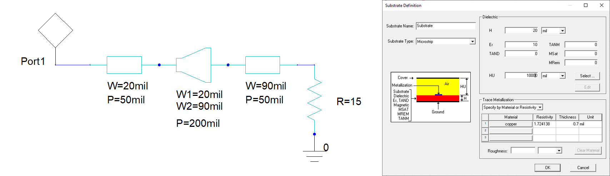
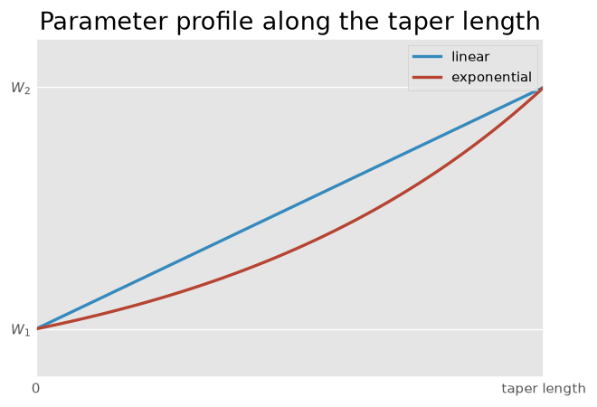
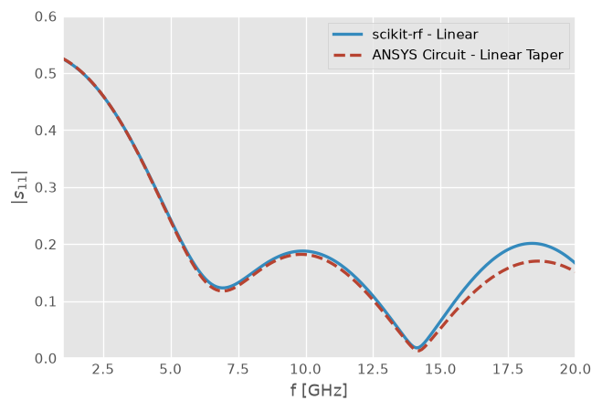
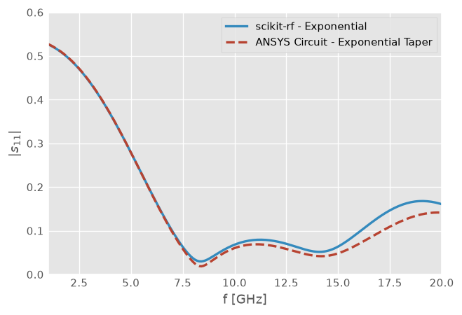

Tapered Transmission Lines#
A tapered line (or simply a taper), is an impedance transformer that matches an impedance \(Z_1\) to an impedance \(Z_2\) using a gradually varying characteristic impedance \(Z(z)\) along the line.
There is an infinite number of ways one can define a profile \(Z(z)\) along the transmission line. scikit-rf implements a generic 1D Taper Taper1D, from which the following direct classes are derived: Linear, Exponential and SmoothStep.
[1]:
import matplotlib.pyplot as plt
import numpy as np
import skrf as rf
from skrf.media import MLine
from skrf.network import cascade_list
rf.stylely()
Geometry#
In this example, we compare a microstrip line which width \(W\) is tapered and loaded with a 15 Ohm resistor:

Before comparing the taper profiles, let’s define the other elements of the circuit, that is the piece of transmission lines and resistor:
[2]:
# Model Parameters
from skrf.constants import mil
freq = rf.Frequency(1, 20, unit='GHz', npoints=191)
w1 = 20*mil # conductor width [m]
w2 = 90*mil # conductor width [m]
h = 20*mil # dielectric thickness [m]
t = 0.7*mil # conductor thickness [m]
rho = 1.724138e-8 # Copper resistivity [Ohm.m]
ep_r = 10 # dielectric relative permittivity
rough = 1e-6 # conductor RMS roughtness [m]
taper_length = 200*mil # [m]
# Media definitions
microstrip_w1 = MLine(freq, w=w1, h=h, t=t, rho=rho, ep_r=ep_r, rough=rough,
disp='kobayashi', z0_port=50)
microstrip_w2 = MLine(freq, w=w2, h=h, t=t, rho=rho, ep_r=ep_r, rough=rough,
disp='kobayashi', z0_port=50)
# piece of transmission lines connected to the taper
line1 = microstrip_w1.line(d=50, unit='mil', name='feeder')
line2 = microstrip_w2.line(d=50, unit='mil', name='feeder')
# loading resistor
resistor = microstrip_w2.resistor(R=15)
The idea is hence to forge a transmission line of variable characteristic impedance. In this example, the width of the metallization \(W\) is varied along the transmission line length. Most common profile are summarized in the figure below:
[3]:
fig, ax = plt.subplots()
z = np.linspace(0, taper_length)
ax.plot(z, (w2-w1)/taper_length*z + w1, lw=2, label='linear')
ax.plot(z, w1*np.exp(z/taper_length*(np.log(w2/w1))), lw=2, label='exponential')
ax.set_xticks([0, taper_length])
ax.set_xticklabels(['0', 'taper length'])
ax.set_yticks([w1, w2])
ax.set_yticklabels(['$W_1$', '$W_2$'])
ax.legend()
ax.set_title('Parameter profile along the taper length')
[3]:
Text(0.5, 1.0, 'Parameter profile along the taper length')

Linear Taper#
[4]:
# create a 2-port Network
taper_linear = rf.taper.Linear(med=MLine, param='w', start=w1, stop=w2,
length=taper_length, n_sections=50,
med_kw={'frequency': freq, 'h': h, 't':t, 'ep_r': ep_r,
'rough': rough, 'rho': rho}).network
print(taper_linear)
# build the full circuit
# equivalent to ntwk = line1 ** taper_linear ** resistor ** line2 ** microstrip_w2.short()
ntwk_linear = cascade_list([line1, taper_linear, line2, resistor, microstrip_w2.short()])
2-Port Network: '', 1.0-20.0 GHz, 191 pts, z0=[47.98835487+0.j 18.86744136+0.j]
[5]:
fig, ax = plt.subplots()
ax.plot(ntwk_linear.frequency.f_scaled, ntwk_linear.s_mag[:,0], lw=2, label='scikit-rf - Linear')
f_ref, s_mag_ref = np.loadtxt('ANSYS_Circuit_taper_linear_s_mag.csv', delimiter=',', skiprows=1, unpack=True)
ax.plot(f_ref, s_mag_ref, label='ANSYS Circuit - Linear Taper', lw=2, ls='--')
ax.set_xlabel('f [GHz]')
ax.set_ylabel('$|s_{11}|$')
ax.set_ylim(0, 0.6)
ax.set_xlim(1, 20)
ax.legend()
[5]:
<matplotlib.legend.Legend at 0x7bfd35380740>

Exponential Taper#
[6]:
taper_exp = rf.taper.Exponential(med=MLine, param='w', start=w1, stop=w2,
length=taper_length, n_sections=50,
med_kw={'frequency': freq, 'h': h, 't':t, 'ep_r': ep_r,
'rough': rough, 'rho': rho}).network
ntwk_exp = line1 ** taper_exp ** line2 ** resistor ** microstrip_w2.short()
[7]:
fig, ax = plt.subplots()
ax.plot(ntwk_exp.frequency.f_scaled, ntwk_exp.s_mag[:,0], lw=2, label='scikit-rf - Exponential')
f_ref, s_mag_ref = np.loadtxt('ANSYS_Circuit_taper_exponential_s_mag.csv', delimiter=',', skiprows=1, unpack=True)
ax.plot(f_ref, s_mag_ref, label='ANSYS Circuit - Exponential Taper', lw=2, ls='--')
ax.set_xlabel('f [GHz]')
ax.set_ylabel('$|s_{11}|$')
ax.set_ylim(0, 0.6)
ax.set_xlim(1, 20)
ax.legend()
[7]:
<matplotlib.legend.Legend at 0x7bfd350ddc70>

[ ]: